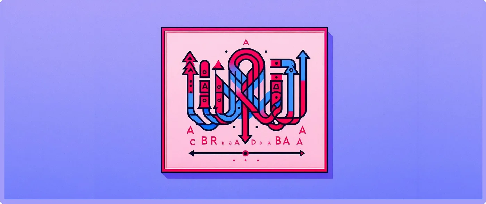

Decoding Duplicates: Exploring Duplicate Detection and Removal with Softanza
Let’s dive into an engaging exploration of how Softanza handles duplicate detection and management in strings. Consider this illustrative string:
by Mansour Ayouni · in the repository since 2024-12-11 · feature essay · area String

First, let's load the library and create a stzString object:
load "stzlib.ring"
o1 = new stzString("ABRACADABRA")illustration
The Question: Are there any duplicated substrings?
The ContainsDuplicates() function reveals the presence of duplicates:
? o1.ContainsDuplicates() #--> TRUE
run on 2026-10-08 20:44 at commit 4a184e6f0: kept its promise
Yes, duplicates are present.
Counting the Duplicates
How many duplicates are there?
? o1.CountDuplicates() #--> 6
illustration
There are 6 duplicates.
Locating the Duplicates
We locate their positions using FindDuplicates():
? @@( o1.FindDuplicates() ) #--> [ 0, 3, 7, 8, 9 ]
illustration
The duplicates occur across 5 unique positions.
Identifying the Duplicates
The Duplicates() function shows which substrings are duplicated:
? @@( o1.Duplicates() ) #--> [ "A", "AB", "B", "R", "A" ]
illustration
Here are all six duplicated substrings, including overlaps.
Understanding Overlapping Duplicates
Using DuplicatesZ() provides insights into overlapping duplicates and their positions:
? @@( o1.DuplicatesZ() ) #--> [ ["A", 0], ["AB", 0], ["B", 1], ["R", 3], ["A", 7] ]
illustration
At position 0, two substrings ("A" and "AB") overlap, explaining the count mismatch.
Removing the Duplicates
Finally, we simplify the string by removing duplicates:
o1.RemoveDuplicates() ? o1.Content() #--> "ABRCAD"
illustration
>NOTE: In Softanza, as a general principle, anything that works for strings will work the same way for lists, following the same syntax and semantics. You can test this yourself by simply replacing o1 = new stzString("ABRACADABRA") by o1 = new stzList([ "A", "B", "R", "A", "C", "A", "D", "A", "B", "R", "A" ]) and making no other changes in your code!
Conclusion
This exploration demonstrates the power of the Softanza library's string manipulation capabilities. By identifying, analyzing, and ultimately removing duplicates, we transform a verbose string into its most concise form. This functionality is invaluable in applications ranging from text processing to data compression, offering both efficiency and clarity in handling complex string data.
Related reading
- The Narrative of Transformations: Tracking Object History in Softanza
- Softanza Near-Natural Programming Tutorial
- Near-Natural Programming: Bridging Human Thought and Code Execution
- Named Variables in Softanza: the What, Why and How!
Cite
Mansour Ayouni. "Decoding Duplicates: Exploring Duplicate Detection and Removal with Softanza". Softanza narrations, 2024. https://mayouni.github.io/stzsite/en/narrations/stzstring-duplicates-narration.html
Run in Haro's name on 2026-10-08 20:44 inside the library at commit 4a184e6f0, block after block in one process: 1 of 7 blocks kept their promise; the others are illustrations. The code of the articles is Haro code. Where an article was written before the language took its present name, the name was changed and nothing else. Genre, area and series read from the file's name, the year from its first commit: derived, until the article carries its own header. The file on GitHub(opens in a new tab)